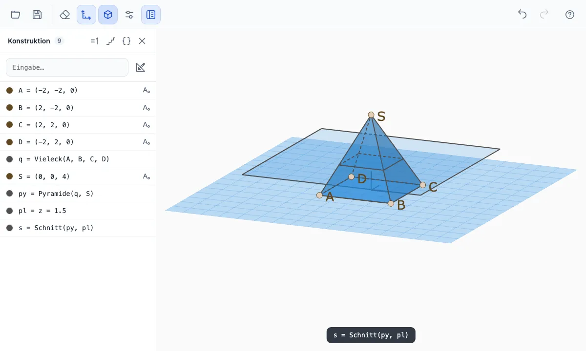

3D

In 3D wechseln
- Eine neue Figur ist eben. 3D-Ansicht kippt die Kamera: Die Ebene der Figur wird zum Boden z = 0, das Koordinatensystem zu einem Dreibein. Ein zweites Drücken kehrt zur Ebene zurück, mit dem vorherigen Koordinatensystem.
-
Die Rückkehr zur Ebene wird abgelehnt, solange ein Objekt
die Ebene z = 0 verlässt; der Hinweis nennt es.
Umgekehrt lehnt eine ebene Figur jedes Objekt im Raum ab
(
A = (1, 2, 3), Kugel…). - Jeder Wechsel ist ein Rückgängig-Schritt.
- 3D-Figuren aus DGPad, deren freie Punkte in der Bildschirmebene liegen, haben diese Schaltfläche nicht.
Ansicht
- Drehen: rechte Maustaste oder ein Finger auf einer leeren Stelle. Verschieben: linke Maustaste auf einer leeren Stelle. Zoomen: Mausrad.
- Ziehen Sie zwei Finger auseinander, um zu vergrößern, und zusammen, um zu verkleinern. Verschieben Sie beide Finger gemeinsam, um die Ansicht zu bewegen.
- P: Perspektive oder Parallelprojektion; S: Boden. Dieselben Einstellungen im Tab „Figur“.
- Verdeckte Teile (Kanten, Kreise, Geraden unter dem Boden oder hinter einer Fläche) sind gestrichelt.
Konstruieren
-
Ein Klick auf eine leere Stelle erzeugt einen Punkt auf dem
Boden (bei geöffneter Palette mit dem Werkzeug Punkt); über
die Tastatur
S = (0, 0, 4). - Die Palette erhält die Familien Ebenen und Körper sowie zwei Kreise; der Ring eines Punktes bietet die Kugel an.
- Spiegelungen, Drehungen, Streckungen und Verschiebungen bilden auch eine Ebene, eine Kugel oder ein Polyeder ab (Ein Objekt abbilden).
-
Jedes Werkzeug, das eine Ebene erwartet, nimmt den
Boden an: Eine ausgeblendete Ebene
z = 0wird erzeugt und danach wiederverwendet. -
Formeln lesen die drei Koordinaten:
d(A, B)ist der Abstand im Raum.
| Objekt | Befehl |
|---|---|
| Ebene |
Ebene(A, B, C),
Ebene(A, d),
ParallelEbene(A, p),
OrthogonalEbene(A, d),
p = x + y + z = 3
|
| Senkrechte zu einer Ebene | Senkrechte(A, p) |
| Kugel |
Kugel(O, A),
Kugel(O, r)
|
| Kreise |
Kreis(d, P) mit Achse d;
Kreis(O, r, d) orthogonal zur
Geraden d oder parallel zur Ebene d
|
| Körper |
Zylinder(A, B, r),
Kegel(A, B, r),
Würfel(A, B, C),
Prisma(p, P),
Pyramide(p, S)
|
| Schnitt |
Schnitt(s, p): Kreis, Kegelschnitt
oder Vieleck
|
| Netz |
Netz(c, f), f von 0 (gefaltet) bis
1 (flach)
|
| Schnitte |
Schnittpunkt(d, p) Punkt,
Schnittpunkt(p, q) Gerade,
Schnittpunkt(s, t) Kreis zweier
Kugeln, Schnittpunkt(d, s, n) Punkt
(n = 1 oder 2) einer Geraden und einer Kugel,
eines Zylinders oder eines Kegels
|
| Ecken | Ecke(c, k), k ab 1 |
| Seitenflächen | Seitenfläche(k, n), n ab 1 |
Körper
- Seitenflächen: Ein Werkzeug, das eine Ebene oder ein Vieleck erwartet oder einen Punkt setzt, nimmt die unter dem Zeiger sichtbare Seitenfläche (Befehle). Das Werkzeug Schnittpunkt nimmt auch eine Gerade und eine Ebene oder ein Vieleck.
- Ein Körper ist ein einziges Objekt: Er zeichnet Flächen und Kanten (dahinter gestrichelt) und verdeckt, was hinter ihm liegt. Er wird innerhalb seines Umrisses gewählt.
-
Würfel mit zwei Klicks: Zwei Punkte
derselben Ebene oder desselben Vielecks ergeben
Würfel(A, B, p, ±1), auf der der Kamera zugewandten Seite; zwei Punkte derselben Höhe ergebenWürfel(A, B, 1), darüber (−1: darunter). Sonst wartet das Werkzeug auf einen dritten Punkt. Der Würfel wird undefiniert, wenn [AB] nicht mehr parallel zur Ebene ist. - Das Werkzeug Schnitt nimmt den Körper und die Ebene in beliebiger Reihenfolge.
- Das Werkzeug Schnittpunkt nimmt eine Gerade und eine Kugel, einen Zylinder oder einen Kegel in beliebiger Reihenfolge: Es erzeugt die beiden Punkte, in denen die Gerade die Fläche durchstößt. Ein Klick nahe einem von ihnen erzeugt nur diesen.
-
Ein Schieberegler als zweites Argument von
Netzanimiert das Aufklappen:f = Schieberegler(0, 1, 0),n = Netz(c, f).